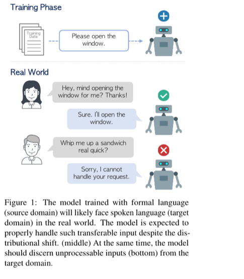

Universal Domain Adaptation for Robust Handling of Distributional Shifts in NLP
EMNLP 2023 Findings
Hyuhng Joon Kim, Hyunsoo Cho, Sang-Woo Lee, Junyeob Kim, Choonghyun Park, Sang-goo Lee, Kang Min Yoo, Taeuk Kim
한줄 요약
도메인 불변 표현 학습과 분포 외 샘플 탐지를 통해 NLP에서의 공변량 변화와 레이블 변화를 동시에 처리하는 범용 도메인 적응 프레임워크입니다.

Figure 1. 범용 도메인 적응의 개요. 소스와 타겟 도메인 간 공유 레이블 클래스와 개별 레이블 클래스를 분포 변화 하에서 동시에 처리해야 합니다.
배경
NLP에서의 도메인 적응은 일반적으로 소스와 타겟 도메인이 동일한 레이블 공간을 공유하고 입력 분포만 다른 경우(공변량 변화)를 가정합니다. 그러나 실제로는 타겟 도메인에 소스에 없는 새로운 클래스가 존재하거나(레이블 변화), 일부 소스 클래스가 타겟에 무관한 경우가 빈번합니다. 범용 도메인 적응(UniDA)은 레이블 공간이 부분적으로만 겹치는 가장 일반적인 설정을 다루며, 모델이 (1) 공유 클래스 샘플을 정확히 분류하고 (2) 타겟 고유 샘플을 미지의 것으로 탐지해야 합니다. 기존 UniDA 연구는 주로 비전 분야에 집중되어 있으며, 표현과 도메인 격차의 양상이 다른 NLP로의 적용은 아직 충분히 탐구되지 않았습니다.
방법
도메인 불변 표현 학습. 소스와 타겟 도메인 간 표현을 정렬하여 공유 클래스 샘플이 도메인에 관계없이 유사하게 군집화되도록 학습합니다.
샘플 수준 전이 가능성 점수. 각 타겟 샘플이 공유 클래스에 속하는지 타겟 고유(미지) 클래스에 속하는지를 추정하는 보정된 점수 메커니즘으로, 선택적 적응을 가능하게 합니다.
미지 클래스 탐지. 전이 가능성 점수가 낮은 샘플을 분포 외로 판별하여, 소스 도메인에 대응하는 클래스가 없는 샘플로 인한 부정적 전이를 방지합니다.
종단간 학습. 표현 정렬, 전이 가능성 점수 산출, 분류를 동시에 최적화하여 파이프라인 단계 분리로 인한 오류 전파를 방지합니다.
결과
감성 분석과 자연어 추론을 포함한 다수의 NLP 벤치마크에서 기존 도메인 적응 기준 모델 대비 일관된 성능 향상을 달성했습니다.
오픈셋, 부분 적응, 완전 오픈-부분 시나리오 등 다양한 수준의 레이블 공간 불일치 상황에서 견고한 성능을 보였습니다.
전이 가능성 점수 메커니즘이 알려진 샘플과 미지의 타겟 샘플을 효과적으로 분리하여 높은 미지 클래스 탐지 정확도를 기록했습니다.
소거 실험을 통해 각 구성 요소(표현 정렬, 전이 가능성 점수, 미지 탐지)가 전체 성능에 의미 있게 기여함을 확인했습니다.
의의
실제 NLP 배포 환경에서 학습 도메인과 배포 도메인의 레이블 공간이 정확히 일치하는 경우는 드뭅니다. 본 연구는 가장 일반적인 형태의 도메인 변화를 처리할 수 있는 원칙적인 프레임워크를 제공하여, 잠재적으로 보지 못한 카테고리가 존재하는 새로운 도메인에 적용할 때 NLP 모델의 신뢰성을 높입니다. 특히 분포 외 입력의 오분류가 큰 비용을 초래할 수 있는 안전 필수 응용 분야에서 의미가 큽니다.